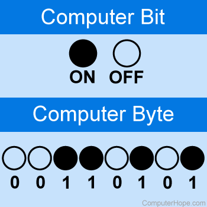

Binair Stelsel
Het binaire stelsel, ook wel het tweetallige stelsel genoemd, is een wiskundig stelsel dat gebruikt wordt in computers en digitale elektronica. In tegenstelling tot het decimale stelsel, dat gebaseerd is op tien cijfers (0-9), is het binaire stelsel gebaseerd op slechts twee cijfers: 0 en 1. Dit stelsel vormt de basis van de digitale informatieverwerking omdat het gemakkelijk te implementeren is met elektronische schakelingen, waarbij stroom aan of uit kan zijn, wat overeenkomt met de binaire 0 en 1.
Hier een uitlegvideo over het binairstelsel
Bits en bytes
Bits:
Een bit is de kleinste eenheid van digitale informatie, afgekort als "binary digit" met slechts twee waarden: 0 of 1. Bits worden gebruikt om alle digitale gegevens te coderen, inclusief tekst, afbeeldingen en geluid. Ze dienen als de bouwstenen voor complexere informatie wanneer ze worden gecombineerd met andere bits.
Bytes:
Een byte is een grotere eenheid van digitale informatie bestaande uit 8 bits. Het wordt veel gebruikt om karaktergegevens, zoals letters, cijfers en speciale tekens, te vertegenwoordigen. Een byte kan 256 verschillende waarden aannemen vanwege de 8 bits, elk met twee mogelijke waarden (0 of 1). Hierdoor kunnen bytes een breed scala aan tekens en symbolen coderen, zoals die in ASCII- of Unicode-coderingsschema's.
ASCII Tabel
De eerste 32 tekens in de ASCII-tabel zijn onafdrukbare besturingscodes en worden gebruikt om randapparatuur zoals printers aan te sturen.
| DEC | OCT | HEX | BIN | Symbol | HTML Name | Description |
|---|---|---|---|---|---|---|
| 0 | 000 | 00 | 00000000 | NUL | � | Null character |
| 1 | 001 | 01 | 00000001 | SOH |  | Start of Heading |
| 2 | 002 | 02 | 00000010 | STX |  | Start of Text |
| 3 | 003 | 03 | 00000011 | ETX |  | End of Text |
| 4 | 004 | 04 | 00000100 | EOT |  | End of Transmission |
| 5 | 005 | 05 | 00000101 | ENQ |  | Enquiry |
| 6 | 006 | 06 | 00000110 | ACK |  | Acknowledge |
| 7 | 007 | 07 | 00000111 | BEL |  | Bell, Alert |
| 8 | 010 | 08 | 00001000 | BS |  | Backspace |
| 9 | 011 | 09 | 00001001 | HT | 	 | Horizontal Tab |
| 10 | 012 | 0A | 00001010 | LF | | Line Feed |
| 11 | 013 | 0B | 00001011 | VT |  | Vertical Tabulation |
| 12 | 014 | 0C | 00001100 | FF |  | Form Feed |
| 13 | 015 | 0D | 00001101 | CR | | Carriage Return |
| 14 | 016 | 0E | 00001110 | SO |  | Shift Out |
| 15 | 017 | 0F | 00001111 | SI |  | Shift In |
| 16 | 020 | 10 | 00010000 | DLE |  | Data Link Escape |
| 17 | 021 | 11 | 00010001 | DC1 |  | Device Control One (XON) |
| 18 | 022 | 12 | 00010010 | DC2 |  | Device Control Two |
| 19 | 023 | 13 | 00010011 | DC3 |  | Device Control Three (XOFF) |
| 20 | 024 | 14 | 00010100 | DC4 |  | Device Control Four |
| 21 | 025 | 15 | 00010101 | NAK |  | Negative Acknowledge |
| 22 | 026 | 16 | 00010110 | SYN |  | Synchronous Idle |
| 23 | 027 | 17 | 00010111 | ETB |  | End of Transmission Block |
| 24 | 030 | 18 | 00011000 | CAN |  | Cancel |
| 25 | 031 | 19 | 00011001 | EM |  | End of Medium |
| 26 | 032 | 1A | 00011010 | SUB |  | Substitute |
| 27 | 033 | 1B | 00011011 | ESC |  | Escape |
| 28 | 034 | 1C | 00011100 | FS |  | File Separator |
| 29 | 035 | 1D | 00011101 | GS |  | Group Separator |
| 30 | 036 | 1E | 00011110 | RS |  | Record Separator |
| 31 | 037 | 1F | 00011111 | US |  | Unit Separator |